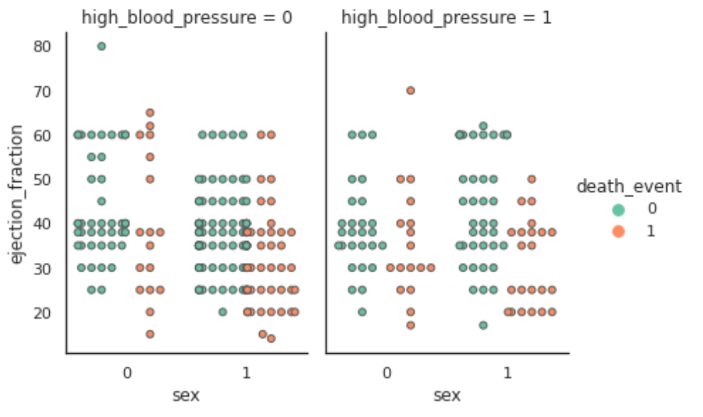
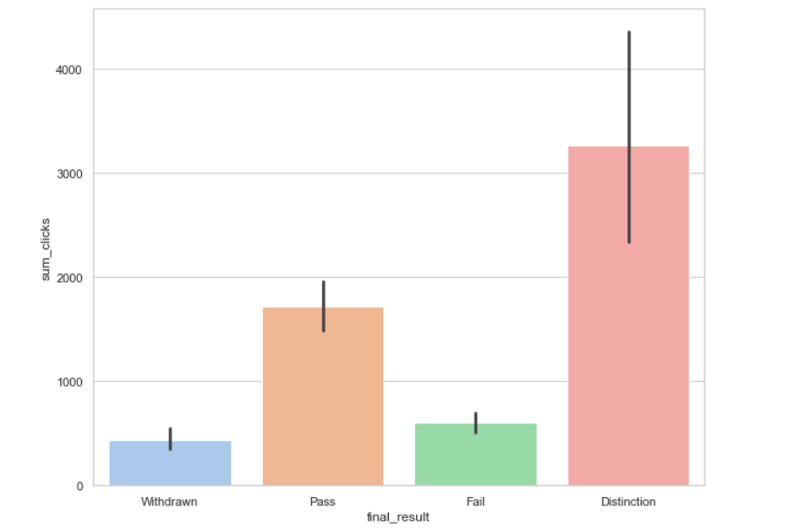

Projects
💻 Personal Assistant
Nutri-Assist
Learn about your intake in one casual voice command! This software allows users to find food nutrition values from their natural language commands using NLP tools and techniques. Read my blog to learn more.
Python
NLP
RESTApi
💻 Data Analysis
Heart Failure Analysis and Prediction
Explored the dataset using EDA to find out prominent factors for heart failure which later were used to build up the machine learning model for early prediction.
Python(NumPy, Pandas, Seaborn, Scikit-learn)

💻 Chrome Extension
Magnifier
This extensions mimics browsers zooming functionality. Added benefit is you can increase or decrese the zoom by 1 level each time instead of 10.
HTML
JavaScript
💻 Chrome Extension
Differential Magnifier
When you use browser zoom, ever wondered if the smallest ones gets zoomed out first? It would be great for the people with visual impairment. Well this extension is for you..[In Progress]
HTML
JavaScript
💻 Chrome Extension
Semantic Extractor
Research project for lower visioned people to enable them creating table of content from a webpage, to
allow focusing on desired part of the webpage later. [In Progress]
HTML
JavaScript
💻 Data Analysis
Behaviour Analysis
Infered the origin and traits of students who do poorly in their academics from Open University Learning Analytics dataset
Python
Jupyter Notebook
